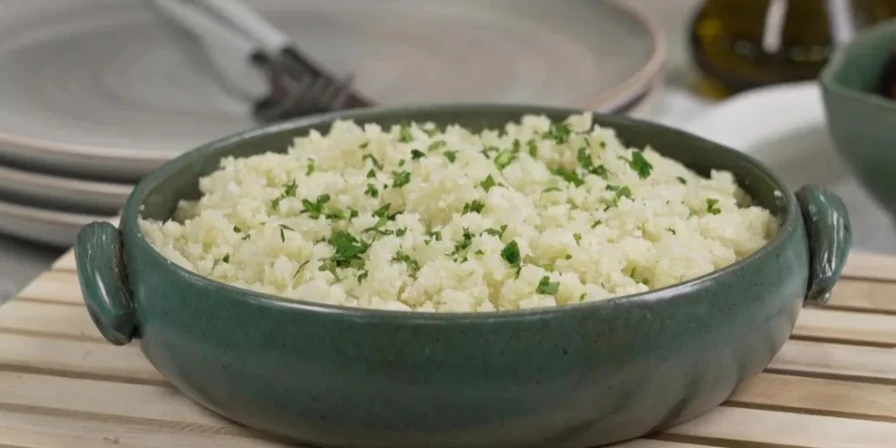

Arroz de Couve-Flor
- Arroz
- Couve-flor
- Cebola média
- Azeite
Deixe a couve-flor picada. Adicione os ingredientes e refogue bem. Adicione sal, tampe a penela e deixe cozinhar.

Bolo de Café
- Farinha de Trigo
- Açúcar
- Café Coado
- Chocolate em pó
- Ovos
Bata o açúcar, as gemas e o café. Adicione farinha e chocolate e mexa bem. Bata as claras e junte às mistura

Coxinha de brigadeiro
- Leite Condensado
- Chocolate em Pó
- Manteiga
- Morango
- Chocolate granulado
Junte o leite condensado, chocolate em pó e manteiga. Aqueça o fogo baixo. Envolva os morangos e passe no granulado